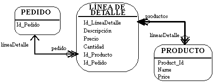
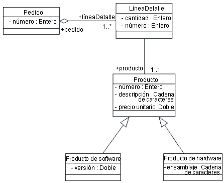
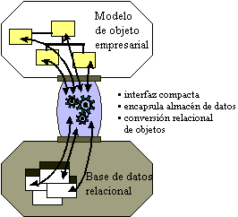

| Concepto: Bases de datos relacionales y orientación de objetos |
 |
|
| Elementos relacionados |
|---|
IntroducciónEste documento de conceptos proporciona una visión general de modelos de objeto y modelos de datos relacionales, y proporciona una descripción resumida de una infraestructura de permanencia. Bases de datos relacionales y orientación de objetosLas bases de datos relacionales y la orientación de objetos no son totalmente compatibles. Representan dos vistas diferentes del mundo: en un RDBMS, sólo se ven datos; en un sistema orientado a objetos, sólo se ve el comportamiento. No se trata de que una perspectiva sea mejor que la otra: el modelo orientado a objetos tiende a funcionar bien en sistemas con comportamiento complejo y comportamiento específico del estado en el que los datos son secundarios, o sistemas en los que se accede a los datos por navegación en una jerarquía natural (por ejemplo, facturas de materiales). El modelo de RDBMS se adapta a los sistemas y aplicaciones de creación de informes que tienen relaciones dinámicas o ad-hoc. El hecho real de la cuestión es que se almacena un montón de información en bases de datos relacionales y, si las aplicaciones orientadas a objetos desean acceder a dichos datos, deben poder leer y escribir en un RDBMS. Además, los sistemas orientados a objetos suelen tener que compartir datos con sistemas que no están orientados a objetos. Por lo tanto, es normal utilizar un RDBMS como mecanismo de compartimiento. Mientras que los diseños relacional y orientado a objetos tienen algunas características en común (un atributo de objetos es, conceptualmente, similar a una columna de entidades), las diferencias fundamentales hacen que la integración perfecta suponga un desafío. La diferencia fundamental es que los modelos de datos muestran datos (mediante los valores de las columnas) y los modelos de objeto ocultan datos (los encapsulan tras las interfaces públicas). El modelo de datos relacionalesEl modelo relacional está formado por entidades y relaciones. Una entidad puede ser una tabla física o un proyección lógica de varias tablas, también conocida como vista. La figura de abajo ilustra las tablas LINEITEM, ORDER y PRODUCT y las diferentes relaciones entre ellas. Un modelo relacional tiene los siguientes elementos:  Un modelo relacional Una entidad tiene columnas. Cada columna se identifica mediante un nombre y un tipo. En la figura de arriba, la entidad LINEITEM tiene las columnas Id_LíneaDetalle (la clave principal), Descripción, Precio, Cantidad, Id_Producto y Id_Pedido (las dos últimas son claves externas que enlazan la entidad LINEITEM con las entidades ORDER y PRODUCT). Una entidad tiene registros o filas. Cada fila representa un conjunto exclusivo de información que normalmente representa los datos permanentes de un objeto. Cada entidad tiene una o varias claves principales. Las claves principales identifican de forma exclusiva a cada registro (por ejemplo, ID es la clave principal de la tabla LINEITEM). El soporte de las relaciones es específico del proveedor. El ejemplo ilustra el modelo lógico y la relación entre las tablas PRODUCT y LINEITEM. En el modelo físico, las relaciones suelen implementarse utilizando las referencias clave externa / clave principal. Si una entidad se relaciona con otra, contiene columnas que son claves externas. Las columnas de clave externa contienen datos que pueden relacionar registros específicos de la entidad con la entidad relacionada. Las relaciones tienen multiplicidad (también conocida como cardinalidad). Las cardinalidades comunes son de uno a uno (1:1), de uno a muchos (1:m), de muchos a uno (m:1) y de muchos a muchos (m:n). En el ejemplo, LINEITEM tiene una relación 1:1 con PRODUCT y PRODUCT tiene una relación 0:m con LINEITEM. El modelo de objetoUn modelo de objeto contiene, entre otras cosas, clases (consulte [UML01] para una definición completa de un modelo de objeto). Las clases definen la estructura y el comportamiento de un conjunto de objetos, a veces llamados instancias de objetos. La estructura se representa como atributos (valores de datos) y asociaciones (relaciones entre clases). La figura siguiente ilustra un diagrama de clase simple, sólo muestra los atributos (datos) de las clases.  Un modelo de objeto (diagrama de clase) Un pedido tiene un número (el número de pedido) y una asociación de 1 o más (1..*) líneas de detalle. Cada línea de detalle tiene una cantidad (la cantidad pedida). El modelo de objeto soporta la herencia. Una clase puede heredar datos y comportamiento de otra clase (por ejemplo, los productos ProductoSoftware y ProductoHardware heredan los atributos y los métodos de la clase Producto). Infraestructuras de permanenciaLa mayoría de las aplicaciones empresariales utilizan la tecnología relacional como un almacén de datos físicos. El reto al que se enfrentan los desarrolladores de aplicaciones orientadas a objetos es separar lo suficiente y encapsular la base de datos relacional de manera que los cambios en el modelo de datos no "rompan" el modelo de objeto, y viceversa. Hay muchas soluciones que proporcionan a las aplicaciones acceso directo a los datos relacionales; el reto consiste en conseguir una integración perfecta entre el modelo de objeto y el modelo de datos. La interfaces de programación de aplicaciones de base de datos (API) se proporcionan en variedades estándar (por ejemplo, API de conectividad para bases de datos abiertas de Microsoft o ODBC) y son propietarias (enlaces nativos con bases de datos específicas). Las API proporcionan el paso de lenguaje de manipulación de datos (DML) a través de servicios, lo que permite a las aplicaciones acceder a datos relacionales brutos. En las aplicaciones orientadas a objetos, los datos deben someterse a la conversión relacional de objetos antes de que los utilice la aplicación. Esto requiere una cantidad considerable de código de aplicación para convertir los resultados brutos de la API de base de datos en objetos de aplicación. El objetivo de la infraestructura relacional de objetos es encapsular genéricamente el almacén de datos físicos y proporcionar servicios de conversión de objetos adecuados.  El objetivo de una infraestructura de permanencia Los desarrolladores de aplicaciones invierten más del 30% de su tiempo en la implementación del acceso a bases de datos relacionales en aplicaciones orientadas a objetos. Si la interfaz relacional de objetos no está implementada correctamente, se pierde la inversión. La implementación de una infraestructura relacional de objetos captura esta inversión. La infraestructura relacional de objetos se puede reutilizar en aplicaciones posteriores reduciendo el coste de la implementación relacional de objetos a menos de un 10% del coste total de la implementación. El coste más importante que se debe tener en cuenta cuando se implementa un sistema es el de mantenimiento. Más del 60% del coste total de un sistema durante su ciclo vital se puede atribuir al mantenimiento. Un sistema relacional de objetos mal implementado puede ser una pesadilla de mantenimiento tanto técnico como financiero. Características esenciales de una infraestructura relacional de objetos
Servicios relacionales de objetos comunes
Los patrones comunes surgen de las aplicaciones relacionales de objetos. Los profesionales de IT que han cruzado
repetidas veces el abismo empiezan a comprender y reconocer determinadas estructuras y comportamientos que exponen
satisfactoriamente aplicaciones relacionales de objetos. Estas estructuras y comportamientos se han formalizado
mediante especificaciones de servicios CORBA de alto nivel (que también se aplican correctamente a sistemas basados en
COM/DCOM). Los siguientes apartados utilizarán estas categorías para estructurar un discusión de servicios relacionales de objetos comunes. Se anima al lector a que consulte las especificaciones de CORBA adecuadas para obtener más detalles. PermanenciaPermanencia es un término utilizado para describir cómo utilizan los objetos un medio de almacenamiento secundario para mantener su estado en sesiones discretas. La permanencia proporciona a un usuario la capacidad para guardar objetos en una sesión y acceder a ellos en una sesión posterior. Cuando se accede a los objetos posteriormente, su estado (por ejemplo, los atributos) será exactamente el mismo que el de la sesión anterior. En sistemas de varios usuarios, puede que no sea así, ya otros usuarios pueden acceder a los objetos y modificarlos. La permanencia está interrelacionada con otros servicios que se tratan en este apartado. La consideración de relación, concurrencia, etc. es intencional (y coherente con la descomposición de servicios de CORBA). Ejemplos de servicios específicos que proporciona la permanencia:
ConsultaEl almacenamiento de objetos permanentes es poco útil si no existe un mecanismo de búsqueda y recuperación de objetos específicos. Los recursos de consulta permiten a las aplicaciones interrogar y recuperar objetos en función de una variedad de criterios. Las operaciones de consulta básicas que proporciona una infraestructura de correlación relacional de objetos son exclusivamente de búsqueda. La operación exclusiva de búsqueda recupera un objeto específico y la búsqueda devuelve una recopilación de objetos basados en los criterios de consulta. Los recursos de consulta del almacén de datos varían significativamente. Los almacenes de datos simples basados en archivos puede implementar operaciones de consulta rígidas propias, mientras que los sistemas relacionales proporcionan un lenguaje de manipulación de datos flexible. Las infraestructuras de correlación relacional de objetos amplían el modelo de consulta relacional para que se centre en objetos, en vez de en datos. Los mecanismos de paso a través también se implementan para aprovechar la flexibilidad de las consultas relacionales y las ampliaciones específicas del proveedor (por ejemplo, procedimientos almacenados). Tenga en cuenta que existe un conflicto potencial entre los mecanismos de consulta basados en bases de datos y el paradigma de objeto: los mecanismos de consulta de la base de datos se basan en los valores de atributos (columnas) de una tabla. En los objetos correspondientes, el principio de encapsulación nos impide ver los valores de los atributos; están encapsulados por las operaciones de la clase. El motivo de la encapsulación es que facilita el cambio de las aplicaciones: podemos alterar la estructura interna de una clase sin preocuparnos de las clases dependientes siempre y cuando no cambien las operaciones visibles públicamente de la clase. Un mecanismo de consulta basado en la base de datos depende de la representación interna de una clase, que rompa la encapsulación de manera eficaz. Para la infraestructura, el reto consiste en impedir que las aplicaciones sean inestables en los cambios. TransaccionesEl soporte de transacciones permite que el desarrollador de aplicaciones defina una unidad atómica de trabajo. En terminología de bases de datos, significa que el sistema debe ser capaz de aplicar un conjunto de cambios en la base de datos, o debe garantizar que no se aplica ninguno de los cambios. O se ejecutan todas las operaciones de la transacción satisfactoriamente o la transacción falla en su conjunto. Las infraestructuras relacionales de objetos deben proporcionar, como mínimo, una base de datos relacional, como recurso para confirmar/ anular transacciones. El diseño de infraestructuras relacionales de objetos en un entorno de varios usuarios puede presentar muchos retos, por lo que se le debe prestar mucha atención. Además de los recursos que proporciona la infraestructura de permanencia, la aplicación debe saber cómo manejar los errores. Cuando una transacción falla o se cancela anormalmente, el sistema debe ser capaz de restaurar su estado a un estado anterior estable, normalmente leyendo la información del estado anterior en la base de datos. De esta manera, hay una estrecha interacción entre la infraestructura de permanencia y la infraestructura de manejo de errores. ConcurrenciaLos sistemas orientados a objetos de varios usuarios deben controlar el acceso simultáneo a los objetos. Cuando varios usuarios acceden a un objeto simultáneamente, el sistema debe proporcionar un mecanismo para asegurar que las modificaciones del objeto del almacén permanente se producen de manera controlada y previsible. Las infraestructuras relacionales de objetos pueden implementar controles de concurrencia pesimistas y/o optimistas.
Rodas las aplicaciones que utilizan datos compartidos deben utilizar la misma estrategia de concurrencia; no se pueden mezclar los controles de concurrencia pesimista y optimista en los mismos datos compartidos, ya que pueden dañarse. La necesidad de una estrategia de concurrencia coherente se maneja mejor mediante una infraestructura de permanencia. Relaciones
Los objetos están relacionados entre sí. Un objeto Pedido tiene muchos objetos Línea de detalle. Un objeto Libro tiene
muchos objetos Capítulo. Un objeto Empleado pertenece exactamente a un objeto Empresa. En sistemas relacionales, las
relaciones entre entidades se implementan mediante referencias de clave externa / clave principal. En sistemas
orientados a objetos, las relaciones suelen implementarse explícitamente mediante atributos. Si un objeto Pedido tiene
LíneasDetalle, Pedido contendrá un atributo llamado LíneasDetalle. El atributo LíneasDetalle de Pedido contendrá muchos
objetos LíneaDetalle.
Conceptualmente, es ventajoso considerar los servicios relacionales de objetos por separado, aunque las implementaciones de infraestructuras relacionales de objeto serán codependientes. Los servicios deben implementarse coherentemente no sólo en las organizaciones que no son individuales, sino también en aplicaciones que comparten los mismos datos. Una infraestructura es la única manera económica de conseguirlo. |
© Copyright IBM Corp. 1987, 2006. Reservados todos los derechos. |